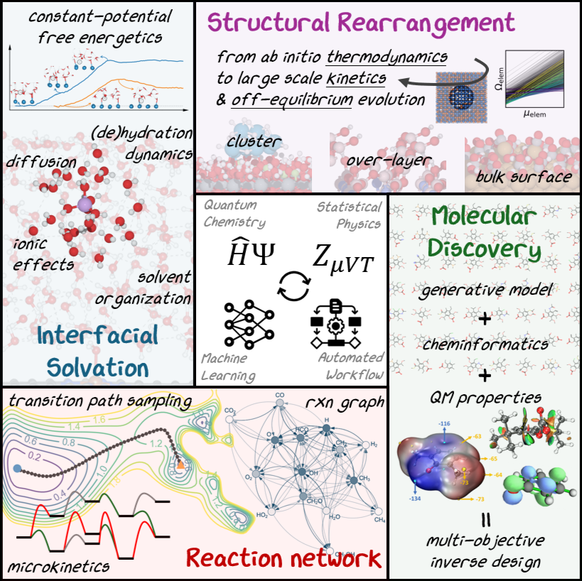

Zisheng Zhang
At the intersection of catalysis, material science, and theoretical chemistry
Seeking tenure-track faculty position

Greetings! I am Zisheng Zhang (張 孜晟), a Stanford Energy Postdoctoral Fellow at the SUNCAT Center for Interface Science and Catalysis. I am working on computational modeling and design of dynamic boride electrocatalysts, hosted by Dr. Frank Abild-Pederson at SLAC and Prof. Thomas Jaramillo at Department of Chemical Engineering. I got my M.Sc. (2021) and Ph.D. (2024) in Chemistry (specialization: theory and computation) at the University of California, Los Angeles (UCLA), advised by Prof. Anastaissia N. Alexandrova. Prior to joining UCLA, I received my B.Sc. in Chemistry from the South University of Science and Technology of China in 2019, advised by Prof. Jun Li.
I am passionate about a wide range of topics in theoretical and computational chemistry, including both method development and applications. My current research focuses on multi-scale realistic modeling of dynamic surface and interfaces in heterogeneous thermal catalysis and electrocatalysis under reaction conditions. I am also interested in inverse design of functional molecules/materials, chemical bonding analysis, global optimization algorithms, and data-driven methods. I have been and will continue developing an arsenal of advanced computational methods combining theoretical chemistry (QM and Stat Mech) and AI/ML to address the complexities in chemical systems. Please take a look at the “projects” page to learn more about my research and publications!
I am currently looking for Tenure-Track faculty positions in Chemistry, Chemical Engineering, Material Science, Applied Physics, or other relevant departments. The research plans of the ZZ Lab are summarized in the comic below:

Trivia: I am a alumnus of the late UCLA-CSST program. I did a research internship at Center for Nanoscale Materials, Argonne National Lab in 2022. I was a rhythmic guitarist on a local band based in Austin, Texas. I love UrbEx and ghost towns. I plan to make xkcd-style TOC graphics for all my first- or corresponding-author papers to come, and proposals if possible.
news
| Apr 7, 2025 | |
|---|---|
| Mar 15, 2025 | |
| Mar 6, 2025 | |
| Dec 10, 2024 | |
| Oct 27, 2024 | Zisheng will present 1 poster and 6 talks at AIChE! |
| Sep 4, 2024 | Zisheng presented a poster at AIMED HetCat Workshop! |
selected publications
† denotes equal contribution | * denotes corresponding authorship-
 GOCIA: a grand canonical global optimizer for clusters, interfaces, and adsorbatesPhysical Chemistry Chemical Physics, 2025 , 27, 2, 696–706
GOCIA: a grand canonical global optimizer for clusters, interfaces, and adsorbatesPhysical Chemistry Chemical Physics, 2025 , 27, 2, 696–706 -
 H and CO Co-Induced Cu Adatom Formation in CO2 Electroreduction ConditionsJournal of the American Chemical Society, 2024 , 146, 23, 16119–16127
H and CO Co-Induced Cu Adatom Formation in CO2 Electroreduction ConditionsJournal of the American Chemical Society, 2024 , 146, 23, 16119–16127 -
 Platinum Surface Water Orientation Dictates Hydrogen Evolution Reaction Kinetics in Alkaline MediaJournal of the American Chemical Society, 2024 , 146, 14, 9623–9630
Platinum Surface Water Orientation Dictates Hydrogen Evolution Reaction Kinetics in Alkaline MediaJournal of the American Chemical Society, 2024 , 146, 14, 9623–9630 -
 Modeling Interfacial Dynamics on Single Atom Electrocatalysts: Explicit Solvation and Potential DependenceAccounts of Chemical Research, 2024 , 57, 2, 198–207
Modeling Interfacial Dynamics on Single Atom Electrocatalysts: Explicit Solvation and Potential DependenceAccounts of Chemical Research, 2024 , 57, 2, 198–207